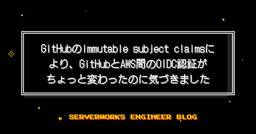
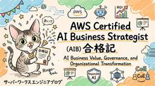
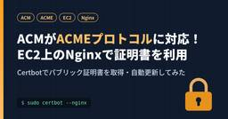
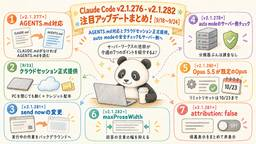

サーバーワークスエンジニアブログ
https://blog.serverworks.co.jp/
AWSトップエンジニア数「AI」「セキュリティ」部門で国内No.1のサーバーワークスのエンジニアが、AWSに関する技術情報をお届けします。
フィード

Claude Code更新 Ultracode独立切替【9/25〜10/1】
サーバーワークスエンジニアブログ
はじめに サーバーワークスの池田です。 今週（9/25〜10/1）のClaude Codeは、v2.1.283からv2.1.287まで5バージョンが公開されました（欠番はありません）。日付と版は公式CHANGELOGの表記に合わせています。 新機能が並んだ週ではなく、以前に紹介した機能の仕様が変わった週です。Ultracodeは、推論の強さ（effort）と別々にオン・オフできるようになりました。/doctorには古い指示を点検するprompt-auditが加わり、Modsには公式のドキュメントとブログが出ています。 紹介済みの機能は、今週変わった部分だけを扱います。以前の記事の説明が今週の変…
6時間前

GitHubのimmutable subject claimsにより、GitHubとAWS間のOIDC認証がちょっと変わったのに気づきました
サーバーワークスエンジニアブログ
こんにちは、アプリケーションサービス本部、DevOps担当の兼安です。 今回は、GitHubとAWSの間のOIDC認証で、immutable subject claimsが原因でつまずきました。 これを機に、この機能の解説と、それに伴う注意点を共有します。 簡単に結論を述べると、GitHubの仕様が変わりGitHubとAWSの間のOIDC認証にIAMロールの信頼ポリシーの書き方が変わったので要注意ということです。 本記事はこのことを説明するものです。 GitHubとAWSの間を繋ぐOIDC認証 GitHub Actionsのimmutable subject claimsとは immutabl…
17時間前

AWS Certified AI Business Strategist (AIB-C01) Beta Exam ― Key Points and My Exam Experience
サーバーワークスエンジニアブログ
Introduction Key Points in Three Lines What Is AIB? Exam Overview Exam Scope and Trends Domains Topics That Felt Heavily Weighted in My Exam Characteristics of the Questions My Exam Experience Why I Took It How I Studied: Almost No Prep (1–2 Hours) Exam Day Result Tips for Passing Takeaways: The Val…
3日前

Amazon Bedrock API キーの作成と利用を禁止する SCP を考える 2
2
サーバーワークスエンジニアブログ
セキュリティサービス部 佐竹です。本ブログでは、Amazon Bedrock における API キーの悪用を防止するため AWS Organizations の SCP (サービスコントロールポリシー) を考えて、実際の JSON を紹介しています。「キーを作らせない」だけでなく「キーを使わせない」までを組織のガードレールとして用意しておくことが、LLMjacking のような新しい攻撃トレンドに対する現実的な備えになるでしょう。
3日前

AWS Certified AI Business Strategist（AIB-C01）― 受験前に知っておきたい要点と受験談
サーバーワークスエンジニアブログ
はじめに 3行でわかる要点 AIB とはどんな資格か 試験概要 出題範囲と傾向 ドメイン構成 私の回で厚めに感じたテーマ 問題文の特徴 受験談 受験の動機 学習方法：ほぼノー勉（1〜2時間） 受験当日 結果 合格のコツ 考察：この資格の価値 まとめ おわりに 参考リンク はじめに こんにちは、愛猫リンゴちゃん大好きのローです。 2026年9月29日にベータ受験が始まった新資格「AWS Certified AI Business Strategist（AIB-C01、以下 AIB）」を初日に受験し、合格しました。 本記事は、これから AIB を受験したい方・どんな資格か知りたい方に向けて、試験の…
3日前

AWS Certificate ManagerがACMEプロトコルに対応、EC2上のNginxでパブリック証明書を発行してみた
サーバーワークスエンジニアブログ
ACMがACMEプロトコルに対応し、CertbotやKubernetesのcert-managerからAWSのパブリック証明書の取得が可能に。この記事ではその仕組みと設定方法を紹介します。
4日前

Amazon InspectorとAWS Security Agent（AWS Continuum）、何が違うのか整理してみました
サーバーワークスエンジニアブログ
ブログサムネイル こんにちは。CC2課の古屋です。 私はこれまで Amazon Inspector（以下、Inspectorという） について「なんとなく脆弱性を検知してくれるサービス」くらいの、勉強レベルの認識しか持っていませんでした。 （実務で触ったことがなくAWSの試験でしか見たことが無い、という方の中には同じような認識の方もいるのではないでしょうか） そんな状態で「InspectorでGitHub等と連携してコードレビュー（脆弱性スキャン）ができる」というセミナーに参加してしまったため、「AWS Security Agent（現在は AWS Continuum に統合されているセキュリ…
4日前

Claude Sonnet 5.5 リリース！速度・コスト・使い方
サーバーワークスエンジニアブログ
Claude Sonnet 5.5の性能・価格とOpus 5.5との違いを解説。Claude Codeでの使い方、effortの選び方、Sonnet 5からのAPI移行時の注意点をまとめます。
4日前

【Amazon Connect Salesforce CTI】初期設定完了後の対応必須。Lambda関数無効化手順
サーバーワークスエンジニアブログ
Amazon Connect と Salesforce を連携する「Amazon Connect Salesforce CTI Adapter」をご利用中のみなさま、こんにちは。 今回は、CTI Adapter の初期セットアップで使用される AWS Lambda 関数 sfExecuteAWSService の役割と、セットアップ完了後に本関数を無効化（クリーンアップ）する簡単な手順について解説します。 お客様ご自身で数分程度で実施できる、シンプルかつ影響の少ない作業ですので、ぜひ本記事の手順に沿ってご対応ください。 対象となるパッケージバージョン・環境 Lambda関数「sfExecute…
5日前

AWSへの移行時にAWS DataSync と MS Robocopy、どちらを選ぶべき？正しい使い分けを解説 1
サーバーワークスエンジニアブログ
こんにちは！イーゴリです。 オンプレミスのWindowsファイルサーバーからAmazon FSx for Windows / NetApp ONTAPへのファイルサーバー移行案件を担当する中で、「AWS DataSyncとRobocopy、結局どちらを使うべきか」という判断に何度も迷う場合があると思います。 単純に「DataSyncは推奨」「Robocopyは無料で手軽」という表面的な比較では、実際の移行作業で発生する文字数制限のエラーや、監査要件（SACL）が絡む場面での判断を誤ってしまいます。 本記事では、実際の移行作業で直面した制限事項を踏まえて、AWS DataSyncとRobocop…
5日前
Codex Remote ControlでEC2上のCodexをスマホ・デスクトップから操作する
サーバーワークスエンジニアブログ
前提と注意点 EC2にCodex CLIを入れてログインする Remote Controlを起動してペアリングする systemdでEC2の起動時に自動で立ち上げる 参考：systemdにプロセスを監視させる構成 EC2で動かすときの注意点 Claude Codeとの違い まとめ 参考資料 こんにちは、サーバーワークスの尾崎です。 Codex CLIのRemote Controlを使うと、EC2で動かしているCodexを、スマホのChatGPTアプリやデスクトップアプリから操作できます。コードの編集やコマンドの実行はEC2側で行われるため、手元のPCを閉じても作業は止まりません。移動中にスマホ…
5日前

Agentic CX Designerがついに登場！わかりやすく紹介します
サーバーワークスエンジニアブログ
はじめに AWS Summitで「Comming Soon…」だった Agentic CX Designer がついにリリースされました！祝 9月2日に一般提供開始したようです。 とはいえ、まだ情報も少なく「色々できそうだけど何ができるか..」状態。 そこでこのブログでは「Agentic CX Designer」について紐解き、ポイントを押さえていきたいと思います。 aws.amazon.com はじめに Agentic CX Designerとは CX Designerの何がうれしいか？ Agentic CX Designerを使うために CX Designerの主な構成要素 1. ワークス…
6日前

Claude CodeのSkillで複数案件を回すために出力先を固定するディレクトリ標準化をやってみた
サーバーワークスエンジニアブログ
AIエージェントと働く上で、ディレクトリ設計について改めて考えてみました。プロジェクトをまたいでも同じようにタスクを進めるためのスキルの書き方も記載しています。
6日前

Claude Code更新 AGENTS.md対応・クラウドセッション正式提供【9/18〜24】
サーバーワークスエンジニアブログ
はじめに サーバーワークスの池田です。 今週（9/18〜9/24）のClaude Codeは、v2.1.276からv2.1.282まで6バージョンが公開されました（v2.1.279は欠番）。 大きな話題は2つです。1つはv2.1.277で入ったAGENTS.md対応で、CLAUDE.mdがないリポジトリではAGENTS.mdをプロジェクト指示として読むようになりました。もう1つはクラウドセッションの正式提供で、9月23日にresearch preview（研究プレビュー）を卒業しています。 ほかにも、auto modeの安全チェックがサーバー側で行われるようになり、Claude Opus 5.…
7日前

AWS のオープンソースソリューション "AWS Service End-of-Life Data" のご紹介
サーバーワークスエンジニアブログ
AWS 社員など有志の手によって公開・維持管理されるオープンソースソリューションで EoL 管理をちょっと楽にできそうな "AWS Service End-of-Life Data" のリリースがありましたのでその紹介記事となります。
8日前
Claude Opus 5.5 リリース！Fable 5.1級の性能でコスト40%減
サーバーワークスエンジニアブログ
はじめに サーバーワークスの池田です。 2026年9月22日、Anthropic が Claude Opus 5.5 をリリースしました。新しい Claude 5.5 ファミリーの最初のモデルで、Opus 5 の後継にあたります。 多くの作業で Claude Fable 5.1 と同等の性能を出しながら、実行コストは Opus 5 より約40%低くなっています。Claude Code では同日公開の v2.1.280 から使え、Opus の既定モデルも Opus 5.5 に切り替わりました。 本記事では、公式発表と公式ドキュメントをもとに、Opus 5 から何が変わったのか、Claude Co…
8日前
Context Ontology Accelerator (COA) とは？具体例で学ぶオントロジーの仕組みと検証レポート
サーバーワークスエンジニアブログ
サーバーワークスの村上です。 AWSがOSSで公開しているContext Ontology Accelerator（以下、COA）について検証した内容を紹介します。 一般的な理解・概念を知りたい方は以下のブログをご参照ください。 blog.serverworks.co.jp オントロジーを具体例で理解する 1つ目：業績テーブル 2つ目：会計期間マスターテーブル 生成されたオントロジー クラス（owl:Class）＝「概念」を宣言する Datatype Property（owl:DatatypeProperty）＝クラスが持つ「属性」 Object Property（owl:ObjectProp…
9日前
AI-DLC Unicorn Gym 参加レポート 〜AI-DLC Workflow V2で体験する新世代のAI駆動開発〜
サーバーワークスエンジニアブログ
はじめに AI-DLC Unicorn Gym の流れ AI-DLC Workflow V2 について ワークフローの基本サイクル V1からV2への進化：2つのループ 用語集 深度（Depth）などの設定 実践1：ECサイト構築 実践2：プロダクト開発 開発したプロダクトの概要 Inception フェーズでの体験 Construction フェーズでの体験 感想と考察 1. AIが頼れる「プロジェクトメンバー」になる 2. 推論待ち時間と思考の切り替え 3. コスト面（トークン使用量） 4. V1からV2へのパワーアップ実感 5. 求められる「即時判断力」と脳への負荷 次にAI-DLCを行う…
10日前
Amazon Connect CustomerのAgentic CX designerを使ってAIボイスボットを構築してみた
サーバーワークスエンジニアブログ
こんにちは、サーバーワークス橋本です。季節もようやく落ち着いてきて過ごしやすい時期になりました。 家の猫も寝る場所をちょうどよい場所に移動するようになりました。 今はキャットタワーの上から仕事している私を監視している毎日です。 さて、Amazon Connect Customerの新しい機能 Agentic CX designer を使って、会話型AIボイスボットを構築してみました。 AWS公式ページ 実際に触ってみたところ、これまでオペレーターが対応していた一次受け業務などを、「簡単かつスピーディに会話型AIへ置き換えられるのでは？」 と非常に期待が高まる内容でした。 今回は、具体的な構築の…
10日前
Claude Code更新 Mods・Slides【9/11〜17】
サーバーワークスエンジニアブログ
はじめに サーバーワークスの池田です。 今週（9/11〜9/17）のClaude Codeは、v2.1.269からv2.1.275まで7バージョンが公開されました。 プラグインまわりの動きが集中した週です。プラグインの振る舞いをTypeScriptの関数で書く「Mods」のソースが公開され、プラグインの効き目を採点するclaude plugin evalが追加されました。9月16日と17日には、Claude本体側でClaude SlidesとProjectsも発表されています。 この記事で分かること Modsとは何か、従来のhooksと何が違うのか 公開された3つのMod（sec-defaul…
14日前
Claude CodeやCursorの"働きぶり"を可視化する ー New Relic Preflightのローカル導入ガイド
サーバーワークスエンジニアブログ
Claude CodeやCursorの利用状況を無料で見える化するNew Relic Preflightの紹介記事です。インストールからセットアップ、ローカルダッシュボードの見方までをローカルモード限定で解説します。
15日前
AI で自分専用の教科書を作って、「学び」と「実務の判断」を両立しよう
サーバーワークスエンジニアブログ
「自分専用の教科書」を作って、実務で解決すべき課題に結びつけながら、意志決定の材料整理と関連要素技術のキャッチアップを同時にやっちゃいましょう！という記事です。
16日前
仕様を伝えたらあとはAI任せ ー エージェントを役割分担させて設計からレビューまで自動化した話
サーバーワークスエンジニアブログ
AI駆動開発でドキュメントとテストが乖離する問題を、エージェントの役割分担で解決した実例。Claude Code・GitHub Copilot活用のワークフロー設計を解説します。
16日前
CloudTrail のイベントをマネジメントコンソールの Amazon Q に自然言語で聞けるようになりました
サーバーワークスエンジニアブログ
今日誕生日の人、おめでとうございます🎉 エデュケーショナルサービス課の森純子です。 CloudTrail のログから「証跡はちゃんと設定できているか」「誰がこのロールを使ったか」を調べようとすると、これまでは Amazon Athena や CloudWatch Logs Insights でクエリを書いたりしていました。どちらのツールを使うべきかを判断し、クエリ言語を覚え、ログの構造を理解して、ようやく答えにたどり着く。セキュリティ調査や監査のたびにこの手間がかかるのは、地味に負担です。 2026年9月15日のアップデートで、CloudTrail がマネジメントコンソールの Amazon Q…
16日前
STS のセッショントークンが 4,096 バイト上限に一本化されたので CLI と CloudWatch で測ってみた
サーバーワークスエンジニアブログ
今月誕生日の人、おめでとうございます🎉 エデュケーショナルサービス課の森純子です。 セッションタグや複数のセッションポリシーを使う構成で、AssumeRole がある日突然 PackedPolicyTooLarge エラーで失敗した経験はないでしょうか。 これまで AWS STS は「セッショントークンのサイズ」と「渡すポリシー・タグのサイズ（packed policy size）」に別々の制限を課していて、どちらに引っかかっているのか分かりづらいところがありました。しかも、トークンが上限にどれだけ近づいているかを数値で知る手段がなかったため、検証環境で意図的に上限付近のトークンを作って確かめ…
16日前
「なぜパスワードなしで安全に繋がるの？」公開鍵と秘密鍵の仕組みを鍵生成から理解するSSH入門
サーバーワークスエンジニアブログ
はじめに SSHとは何か？ SSH（Secure Shell）の基本 なぜSSHが必要なのか？ SSHが保証する3つの安全機能 公開鍵と秘密鍵の役割 秘密鍵を送信しない？公開鍵認証が安全な理由 EC2接続の裏側で起きていたこと おわりに はじめに こんにちは、最近VIVANTにハマっている椎名です。今回は、「SSHの暗号化や鍵ペア認証の仕組み」について書きます。 以前書いた記事『【前編】VS CodeのRemote-SSHでEC2に接続してみよう』では、AWSで取得した .pemファイルを使ってVS CodeからEC2へ接続する実践的な手順をご紹介しました。 前回は接続体験を優先したため「.p…
17日前
AMI で利用できるインスタンスタイプを指定できるようになりました
サーバーワークスエンジニアブログ
Amazon EC2 で AMI 上で利用できるインスタンスタイプを指定できるようになりました 「このAMI、うっかり関係ないインスタンスタイプで起動されて起動失敗した」みたいな事故、地味に起きがちです。 今回、AMI側に利用できるインスタンスタイプを定義できるアップデートが入ったので、実際に触って挙動を確認してみました。 Amazon EC2 が AMI と互換性のあるインスタンスタイプの指定をサポート 対象としている読者 独自AMIを配布・運用していて、意図しないインスタンスタイプで起動されるのを防ぎたい方 ARMやGPUなど特定アーキテクチャ専用のAMIを、うっかり非対応のインスタンスタ…
17日前
Amazon Bedrock の API キーとは何者なのか？ IAM の観点から読み解いてみる
サーバーワークスエンジニアブログ
Amazon Bedrock の API キーの正体は IAM のサービス固有認証情報です。short-term と long-term の違い、既定ポリシーが許す範囲、そしてアクセスキー流出時に攻撃者が長期キーを発行する連鎖とその防ぎ方までを IAM の観点から整理しました。
17日前
【福岡開催レポート】Claude Desktop × Amazon Bedrock で挑むAIエージェント活用セミナー
サーバーワークスエンジニアブログ
こんにちは。AI推進課の菅谷です。 2026年8月20日、福岡にて「Claude on Amazon Bedrock ハンズオンイベント」を開催いたしました。当日は7社13名の皆様にご参加いただきました。 現場から「Claudeを使ってみたい」という声が届く一方で、いざ検討を始めると、 Claudeは、現場の生産性を本当に向上させてくれるのか？ 自社でClaudeを安全に利用するにあたり、どのポイントに注目すればいいのか？ Anthropicとの直接契約とAWS（Amazon Bedrock）経由、どちらが自社にとってベターなのか？ といった点で立ち止まってしまう企業様も多いのではないでしょう…
18日前
Amazon SES Mail Manager の宛先ドメインごとでSMTPリレーの転送先を振り分ける
サーバーワークスエンジニアブログ
Amazon SES Mail Managerを利用して、特定ドメイン宛のメールを異なるサーバーに振り分ける構成を紹介します。SMTPルーティングの具体的手順と注意点を徹底解説。
18日前